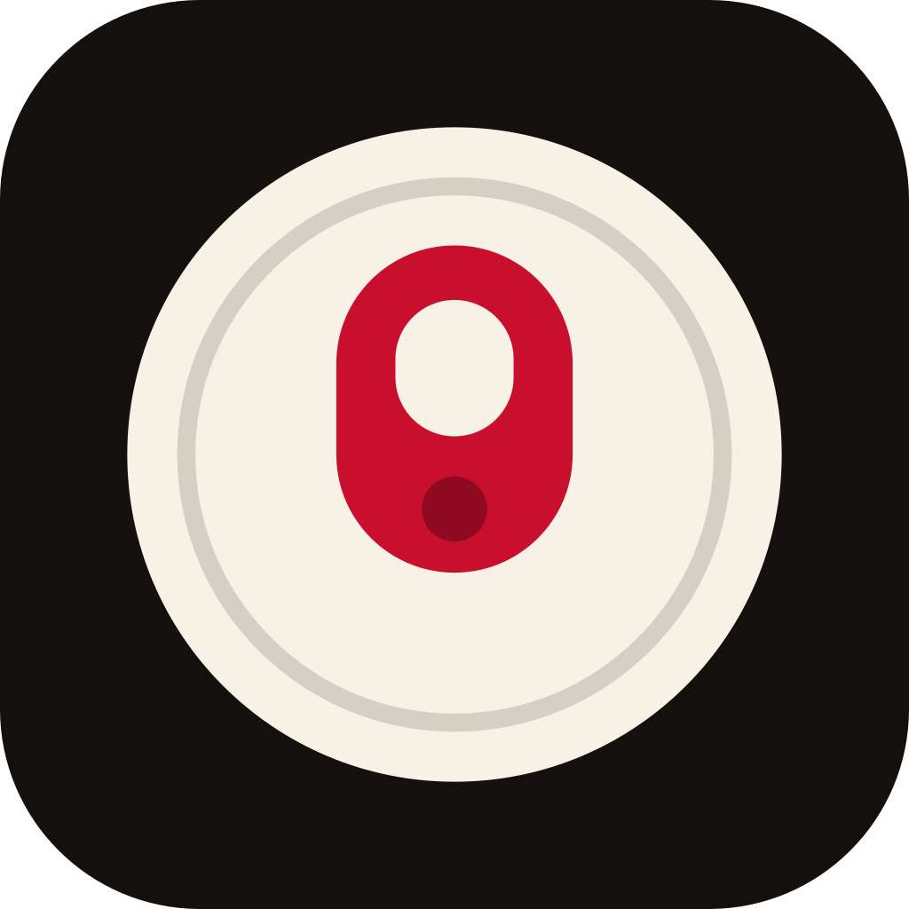
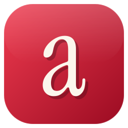
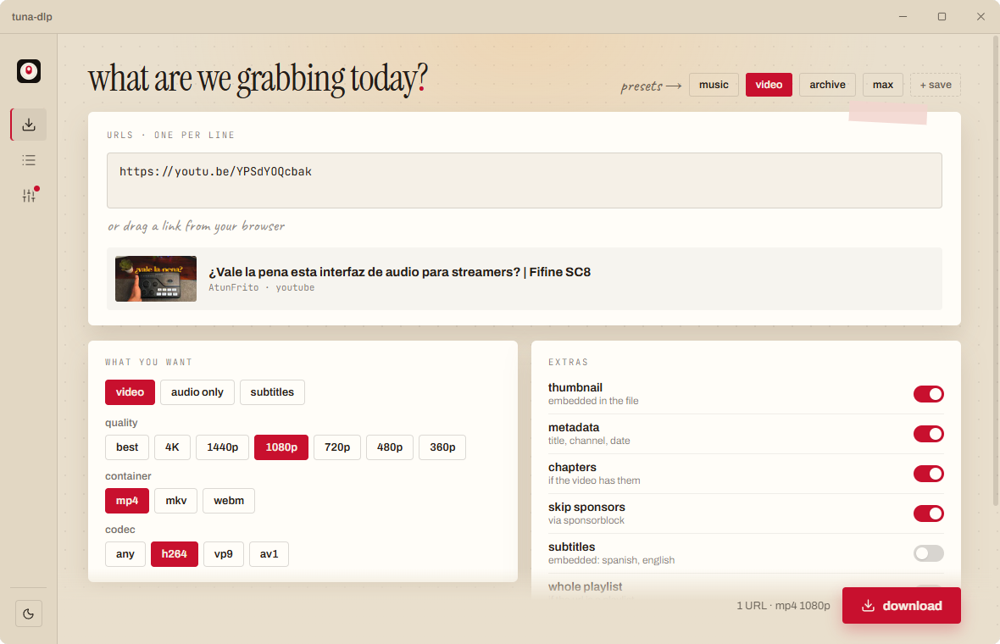
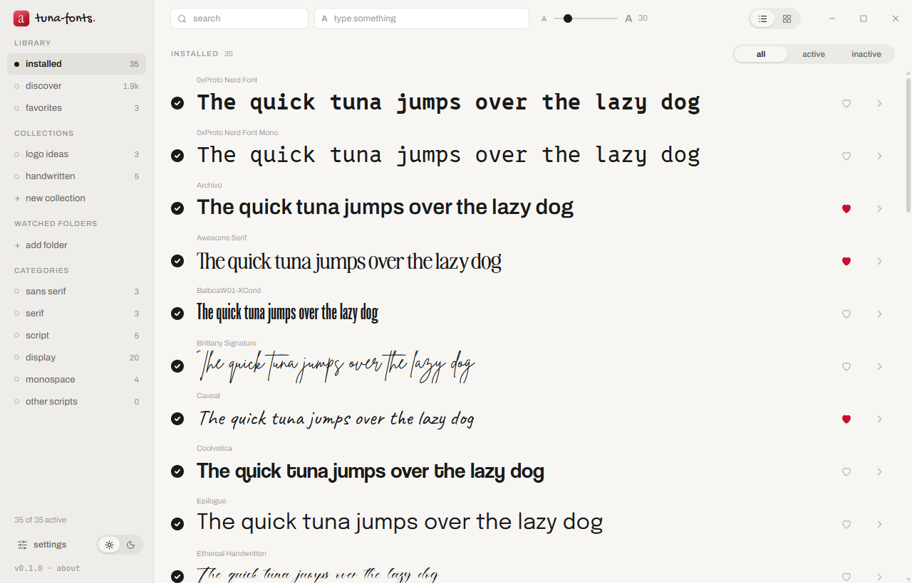

[atun
frito
]
small apps for windows that do
one thing
well.
no accounts · no ads · nothing phoning home


hecho en
la cueva
free · open source · MIT
tuna
-
dlp
.
paste a link, pick what you want and press download. yt-dlp and ffmpeg, with buttons.

yt-dlp + ffmpeg
en · es
download
→
tuna-fonts
.
all your fonts in one place. switch them off without deleting, install new ones in one click.

google fonts
en · es
download
→
hecho en la cueva
.